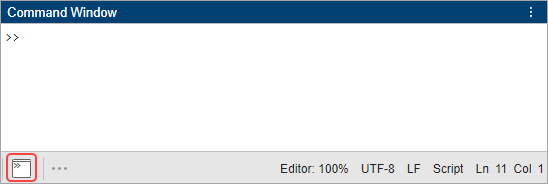

Command Window
Enter statements at the command line
Description
The Command Window enables you to enter individual statements at the command line, indicated by the prompt (>>). As you enter statements, the Command Window displays the results.
For example, to create the variable a, type a =
1 at the command line and press Enter. MATLAB® adds the variable to the workspace and displays the result in the Command
Window. To suppress the display of output, end statements with a semicolon, for example,
a = 1;.
If you do not specify an output variable, MATLAB uses the variable ans, short for
answer, to store the results of your calculation. The value of
ans changes with every command that returns an output value that
is not assigned to a variable.
This table describes some additional actions that you can perform in the Command Window.
| Action | How to Perform the Action |
|---|---|
| Enter multiple statements on multiple lines before running any of the statements. | Enter the multiple statements at the command line, pressing Shift+Enter between statements. This key combination is unnecessary when you
enter a paired keyword statement on multiple lines, such as
|
| Clear a statement from the command line without executing it. | Press the Escape (Esc) key. |
| Recall previous statements. | Press the Up arrow ↑ key. The Command History window opens and displays a log of previous statements. To
recall a specific statement, type any part of the statement and then
press the Up arrow key. For example, to recall the command
|
| Clear the Command Window. | Call the To clear the Command Window without deleting any text,
call the |
| Evaluate a statement already in the Command Window. | Select a statement, right-click, and then select Evaluate Selection. |
| Execute only a portion of the code currently at the command line. | Select the code at the command line and press Enter.
|
Open the Command Window
The Command Window is always open. To show the Command Window if it is hidden, click its icon in the sidebar. For example, if the Command Window is in its default location at the bottom of the MATLAB desktop, click the Command Window icon in the bottom sidebar.

To move the Command Window to the left, right, or bottom of the desktop, drag it or its icon to the new location. To move it to the center of the desktop, click the Command Window actions button at the top of the Command Window and select Move Command Window > Center. To undock the Command Window, select Undock Command Window.
To restore the Command Window to its default location and size, go to the Home tab, and in the Environment section, click Layout. Then, select from one of the preconfigured desktop layout options.
Examples
Programmatic Use
Tips
To determine the number of columns and rows that appear in the Command Window in its current size, type
matlab.desktop.commandwindow.sizein the Command Window. MATLAB returns the number of columns and rows, respectively. For example:matlab.desktop.commandwindow.size
ans = 133 24
If the Set matrix display width to eighty columns Command Window setting is selected, the number of columns is 80. For more information, see Modify Command Window Settings.
To display text or the value of a variable in the Command Window, use the
dispfunction. For example, this code creates a variable and displays its value in the Command Window.A = [15 150]; disp(A)
You also can use the15 150
fprintffunction to display text.To access previous commands and output in the Command Window scroll buffer region using the keyboard, press Shift+Tab. The cursor moves to the last output or command. Use the up arrow and down arrow keys to move up and down between previous commands and output within the scroll buffer region. To move back to the command prompt, press Tab. (since R2024a)
Version History
Introduced before R2006a